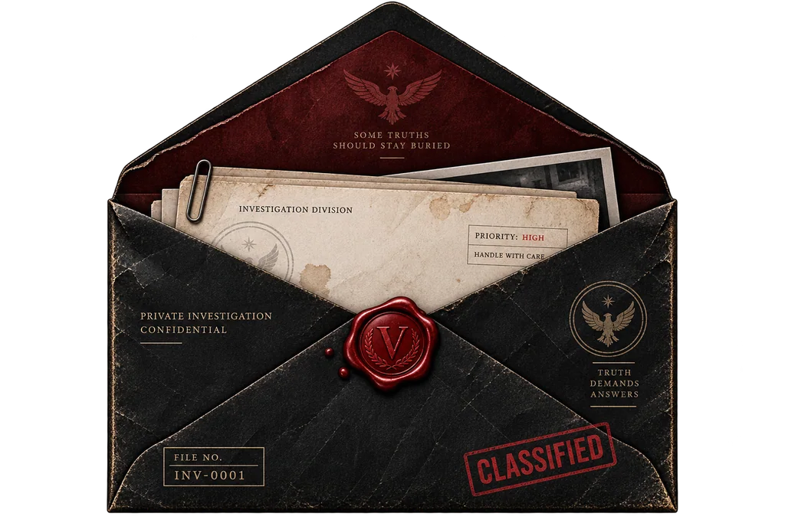

تخطي
اضغط لتشغيل المقدمة
◈
قسم التحقيق
لديك رسالة سرية
اضغط على الظرف لفتح ملفك.

إنشاء هوية المحقق
اسم المحقق فقط هو الذي يظهر للاعبين.
اسم المحقق
البريد الإلكتروني
كلمة المرور
تأكيد كلمة المرور
اعتماد هويتي
أو
G
المتابعة باستخدام Google
لدي هوية بالفعل — تسجيل الدخول
قسم التحقيق
المحقق
⚙
القضايا المجانية
حتى 6 لاعبين
القضايا الخاصة
حتى 10 لاعبين
القضايا المجانية
حتى 6 لاعبين
القضايا الخاصة
حتى 10 لاعبين
القضايا
الملف
التصنيف
‹
ملف المحقق
♢
م
المحقق
محقق أول
المستوى
1
0
القضايا
0
المحلولة
0%
الدقة
الشارات
تتطور مع إنجازاتك
◈
البداية
⌁
ملاحظ
◇
محلل
✦
محقق
الأصدقاء
ابحث باسم المحقق
بحث
قائمة الأصدقاء
لا يوجد أصدقاء بعد.
طلبات الصداقة
لا توجد طلبات حالياً.
المحادثات
للأصدقاء فقط
لا توجد محادثات بعد.
الملف
الأصدقاء
الطلبات
المحادثات
‹
◈
المحقق
➤
×
الإعدادات
إعادة مشاهدة المقدمة السينمائية